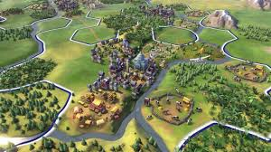

Genre
Genres
Mann kann Videospiele in Vier große Genres einteilen obwohl sehr oft Überschneidungen vorkommen.
Actionspiele
Actionspiele richten sich vorallem an erwachsene Spieler. Darunter fallen
auch die sogenannten Shooter(Ego-Shooter, 3rd Person-Shooter, Taktik Shooter)
aber auch Hack&Slay-Spiele.Während Shooter im Normalfall aufgrund der
explizierten Gewaltdarstellung eine Altersfreigabe ab 18 Jahren erhalten oder
sogar indiziert werden,bekommt man einige Hack&Slay-Spiele bereits ab 16 Jahren.
Abenteuerspiele
Abenteuerspiele unterteilen sich in drei Subgenres:
Adventures,Rollenspiele und Survival-Horror-Spiele. Diese Überschneiden sich häufig mit
Actionspielen. sodass hier keine klaren Grenzen gezogen werden k önnen. In einem Adventure
erlebt man die Geschichte durch das Erkunden der Spielwelt und das Lösen von Rätseln.
Die Wurzeln derRollenspiele(engl. role-playing video game, role-playing game, RPG)liegen
in den Pen-&-Paper-Rollenspielen. Nur das die Aufgabe des Spielleiters vom Computer Übernommen wird.
Die bekanntesten Beispiele dürften World of Warcraft, The Elder Scrolls-Reihe oder The Witcher III sein.
Strategiespiele
3.Strategie-Spiele unterteilt man in: Aufbaustrategie und Wirtschaftsstrategie.
Die Spiele sind entweder rundenbasiert oder in Echtzeit. Auch hier gibt es
wieder diverse Überschneidungen. Strategie Spiele werden zudem auch viel auf
mobilen kommunikationsgeräten gespielt.
Simulationen
4.Simulationen nehmen einen sehr speziellen Platz in den verschiedenen Arten
von Videospielen ein. Sie sind vor allem im deutschsprachigen Raum besonders beliebt,
den Grund dafür weiß jedoch niemand so genau. Neben den “trashigen“ Varianten,
die gleichzeitig die umsatzstärksten sind, gibt es aber auch noch durchaus
ernstzunehmende Simulationen. So ist die Spiele reihe “Die Sims“ eine der
erfolgreichsten Reihen Überhaupt.
